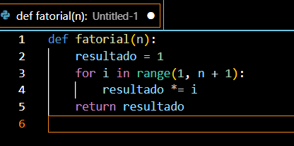
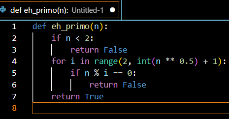
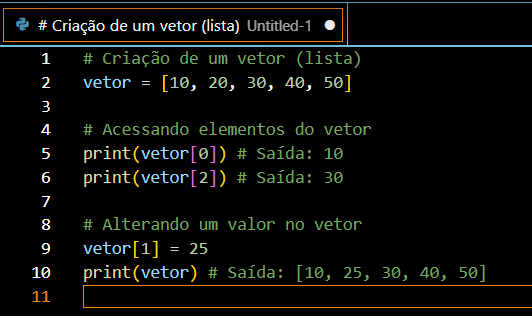
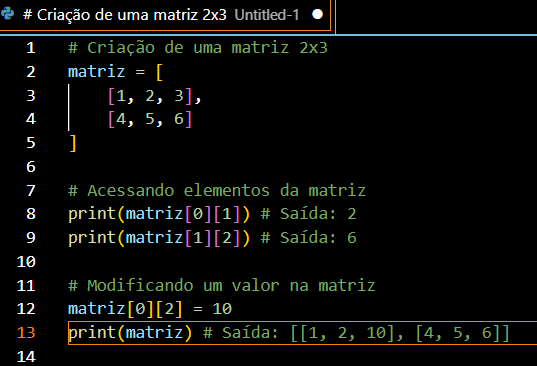
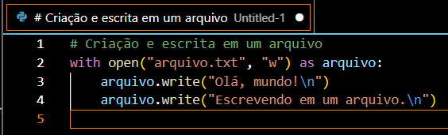
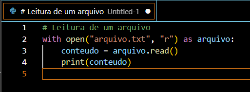
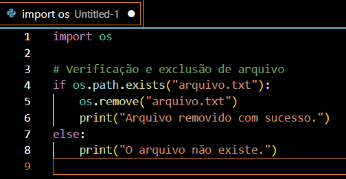

.jpg)
Programas Básicos em Programação: Exemplos e Explicações.
Neste modulo, abordaremos conceitos fundamentais em programação, como programas básicos (fatorial, números primos, etc.), vetores, matrizes e manipulação de arquivos. Esses tópicos são essenciais para o desenvolvimento de habilidades sólidas em programação. Vamos ver cada um deles com explicações e exemplos práticos.
1. Fatorial
O fatorial de um número "n" é o produto de todos os números inteiros de "1" até "n". Em notação matemática, isso é representado como "n!".
>Exemplo de Código:
def fatorial(n):
resultado = 1
for i in range(1, n + 1):
resultado *= i
return resultado
Teste:
print(fatorial(4)) # Saída: 24
2. Verificação de Números Primos
Um número é considerado primo se ele for maior que 1 e não puder ser dividido por nenhum outro número além de 1 e dele mesmo. Exemplos de números primos incluem 2, 3, 5, 7 e 11.
Exemplo de Código:
def eh_primo(n):
if n < 2:
return False
for i in range(2, int(n ** 0.5) + 1):
if n % i == 0:
return False
return True
Teste:
print(eh_primo(7)) # Saída: True
print(eh_primo(8)) # Saída: False
3. Vetores
Vetores são estruturas de dados que armazenam uma sequência de elementos, que podem ser acessados por seus índices. No Python, os vetores são chamados de listas.
>Exemplo de Código:
# Criação de um vetor (lista)
vetor = [10, 20, 30, 40, 50]
# Acessando elementos do vetor
print(vetor[0]) # Saída: 10
print(vetor[2]) # Saída: 30
# Alterando um valor no vetor
vetor[1] = 25
print(vetor) # Saída: [10, 25, 30, 40, 50]
4. Matrizes
Matrizes são uma generalização dos vetores, onde armazenamos dados em uma tabela bidimensional (linhas e colunas). No Python, elas podem ser representadas como listas de listas.
>Exemplo de Código:
# Criação de uma matriz 2x3
matriz = [
[1, 2, 3],
[4, 5, 6]
]
# Acessando elementos da matriz
print(matriz[0][1]) # Saída: 2
print(matriz[1][2]) # Saída: 6
# Modificando um valor na matriz
matriz[0][2] = 10
print(matriz) # Saída: [[1, 2, 10], [4, 5, 6]]
5. Manipulação de Arquivos
A manipulação de arquivos é uma parte importante da programação, permitindo a leitura, escrita e exclusão de arquivos de dados no sistema.
5.1. Criando e Escrevendo em Arquivos
Podemos criar e escrever dados em um arquivo usando o modo "w" (escrita) ou "a" (acréscimo).
Exemplo de Código:
# Criação e escrita em um arquivo
with open("arquivo.txt", "w") as arquivo:
arquivo.write("Olá, mundo!\n")
arquivo.write("Escrevendo em um arquivo.\n")
5.2. Lendo Arquivos
Para ler o conteúdo de um arquivo, usamos o modo "r".
Exemplo de Código:
# Leitura de um arquivo
with open("arquivo.txt", "r") as arquivo:
conteudo = arquivo.read()
print(conteudo)
5.3. Excluindo Arquivos
Para apagar um arquivo, utilizamos o módulo "os".
Exemplo de Código:
import os
# Verificação e exclusão de arquivo
if os.path.exists("arquivo.txt"):
os.remove("arquivo.txt")
print("Arquivo removido com sucesso.")
else:
print("O arquivo não existe.")
